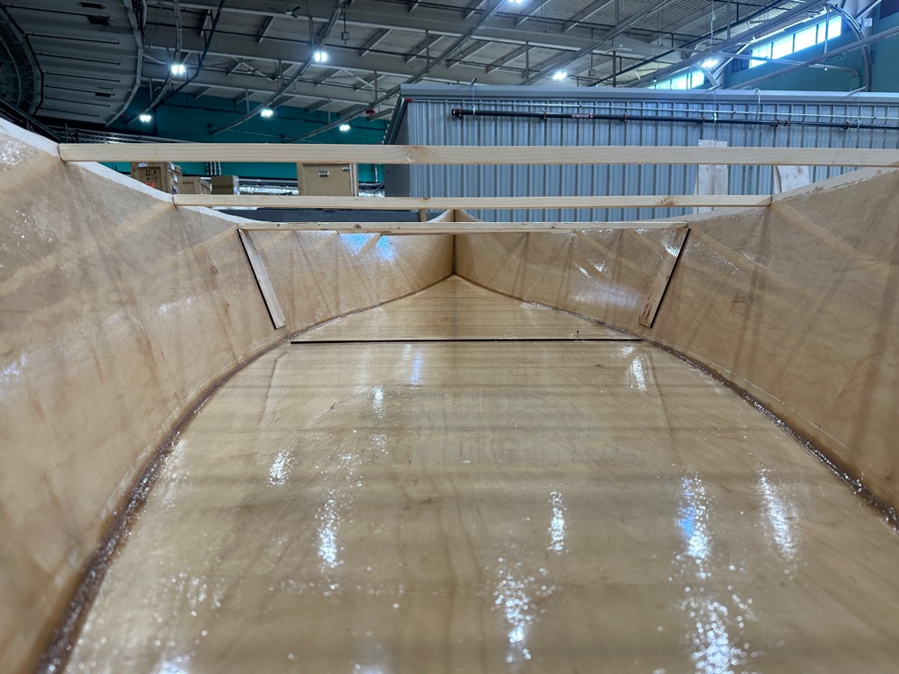
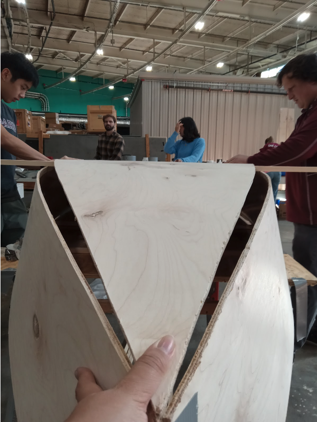

<div class="textcontainer">
<p class="margin"> </p>
<h3>Week 6: Chine Joint & Composites</h3>
<p> This week, we finished screwing in the last two spreaders. We had to split one of the planks in half lengthwise because it was too thick to fit flush with the walls of the canoe. After screwing them in, we flipped the boat over and placed the boat’s floor atop two gunwales serving as racks across the boat's walls. We then started taping the bottom to the walls, starting from the center to make sure the alignment was accurate. We made sure the walls of the boat sat beneath the bottom of the boat. This required a lot of force and teamwork; since our boat is so big, the curvature around the tips is quite big. Thus, getting the proper alignment was a challenge.
After taping the boat together, we coated the edges of the boat with epoxy. </p>
<style>
img {
display: block;
margin-left: auto;
margin-right: auto;
}
</style>
<img src="captainryan.png" alt="captainryan" style="width:400px;height:600px;">

<img src="upsidedownboat.jpg" alt="upsidedownboat" style="width:400px;height:600px;">

</div>